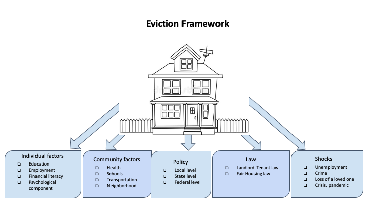

2020 Richmond City Project
The city of Richmond has one of the highest eviction rates in the United States. The VT DSPG used publicly available data to characterize areas of high eviction need in Richmond.
Project Goals
This project aims to help Virginia Cooperative Extension (VCE) carefully target their nutrition and financial literacy programs to the areas of highest need within the city of Richmond.
Our Approach
The VT-DSPG program partnered with VCE to first identify the factors that predict eviction. Then used this information to develop an eviction vulnerability index which maps socio-economic determinants of eviction at the census tract level.
Project description:
Goal:
In our project, we examine eviction rates across cities in the United States. The first step is to create a regression model, which shows the key state-level policies and socio-demographic characteristics that affect eviction rates. Next, we present a dashboard of maps where the user can select a characteristic and visualize geospatial differences across Census tracts in Richmond. These maps highlight the census tracts where further intervention may be warranted. Our analysis and contextualization will allow Virginia Cooperative Extension to carefully target their nutrition and financial literacy programs to the areas of highest need in Richmond and elsewhere in Virginia.
Project Approach
Oftentimes the convergence of housing demand and supply has reduced the meaning of living to a mere consumption need that can be satisfied in the market like every other need. Living is indeed a process that involves individuals and their actions and relationships. To better understand the framework of the many complex aspects of living, and consequently of eviction, we should consider the strong implications that living has with the surrounding environment.
!
Consequences of eviction:
- Poverty increase
- Lower quality education
- Lower safety
- Lower quality education
- Lower safety
References
Washington, Lark. "Rehouse Richmond: Plan to Address the Eviction Crisis." (2020).
Desmond, Matthew. "Eviction and the reproduction of urban poverty." American journal of sociology 118.1 (2012): 88-133.
Teresa, B. "The Geography of Eviction in Richmond: Beyond Poverty." RVA Eviction Lab. GeographiesofEviction. pdf (2018).
Lempert, Richard, and Kiyoshi Ikeda. "Evictions from public housing: effects of independent review." American Sociological Review (1970): 852-860.